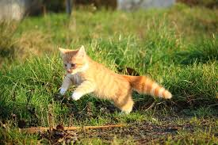

Cat
In terms of development, the first year of a cat’s life is equal to the first 15 years of a human life. After its second year, a cat is 25 in human years. And after that, each year of a cat’s life is equal to about 7 human years.
- Scientific Name: Felis catus
- Average Length: 46 centimeters
- Average Lifespan: 15 years
- Habitat: Home of Homo sapiens
The domestic cat or the feral cat is a small, typically furry, carnivorous mammal. They are often called house cats when kept as indoor pets or simply cats when there is no need to distinguish them from other felids and felines. Cats are often valued by humans for companionship and for their ability to hunt vermin. There are more than 70 cat breeds; different associations proclaim different numbers according to their standards.